Making History • HIST 1105 • Week 2 Overview
Take home this week
The cliché is storyteller vs. scientist. Set it aside. Herodotus is doing real research; Thucydides is still shaping his material for effect. The interesting question isn’t who is more objective — it’s what each one thought he owed to the truth, and what he thought he owed to the reader.
Livy in Rome and Sima Qian in Han China write within a lifetime of each other, with no knowledge of one another, and both conclude the past must be useful. Same question as the Greeks, two independent answers.
Part one · 2.1
Four things to take from the secondary reading. These set up the primary sources for weeks 2 and 3.
Popkin 01 · Two correctives
“For much of the twentieth century, for example, the history of history was written as a story of progress, in the course of which historical thinking gradually freed itself from mythical and religious elements and adopted a scientific perspective.” Popkin, From Herodotus to H-Net, p. 26
Older approaches are not “simply… outmoded approaches that have now been replaced by the ‘proper’ way of doing history”; instead “there have always been multiple perspectives from which the past can be viewed” (p. 27). This is the design principle of our whole syllabus.
They “were certainly not the first people to record information about historical events or to construct stories about the past” (pp. 27–28). Egypt kept king lists for centuries; Persia had its own traditions; both Greeks knew Homer; the Jews had written down their origins. And in China, Confucius insisted on remembering the past “to draw lessons from them that would guide appropriate conduct in the present” (p. 28) — a claim we see again soon.
Recording the past is ordinary and ancient. Read these authors as different answers, not as rough drafts of us.
Popkin 02 · The key innovation
“What made the works of Herodotus and Thucydides different… was their attempt to define history as a distinct method of telling the story of the past, unique above all because of its devotion to the use of critically examined evidence in order to discover and transmit the truth about bygone events.” Popkin, p. 28
Notice how much work “critically examined” is doing. Not recorded, not preserved — examined. A claim now comes with a procedure attached, and a procedure can be challenged by someone else. They had to “define for themselves what history should take as its subject, what materials it should draw on, how they should be evaluated, and what purposes it should be designed to achieve” (p. 28).
There were no rules. That’s why they disagreed — and why we still disagree.
Popkin 03 · What they agreed on
“Unlike Homer, they eliminated the gods from their explanation of events” and defined history as “the story of the thoughts and deeds of human beings” (p. 28). If gods cause events there is nothing to investigate — only something to report.
History should concern “exceptional events that affected the lives of whole societies, not… the lives of individuals” — and each claimed his war was “the most important conflict the world had ever known” (p. 28).
Popkin says their “most important contribution” was putting it in writing (p. 30) — permanent material, copyable, and therefore comparable with other documents. Criticism needs a fixed text.
Popkin 04 · Two books, two moods
“Whereas Herodotus had told the heroic story of how the Greeks had successfully defended their freedom from a foreign enemy, Thucydides recounted the tragic tale of how internal conflicts and Athens’s unbridled ambitions had brought disaster upon his native city.” Popkin, p. 29
These are not two neutral reports that happen to differ in rigor. They are two different genres with two different emotional jobs — defense and self-destruction. Readers ever since have taken Thucydides as “a warning against the dangers that can befall a society that overestimates its own strength” (p. 29).
Before method, each man chose a shape: triumph or tragedy.
Part two · Two wars, two evidence problems
Persia invades Greece and loses (490, then 480–479 BCE) — a war that happened when Herodotus was a young child (Popkin, p. 27). His evidence is other people’s memory, gathered by travel, in several languages, already in disagreement.
Athens and Sparta destroy each other (technically Sparta wins) (431–404 BCE). Thucydides is an Athenian commander in the war he describes — and is exiled for a defeat he admits was his own fault. His evidence is what he saw, while it was happening.
Most of the “methodological” gap between them stems from what each man could actually get his hands on. Don’t mistake an evidence situation for a method.
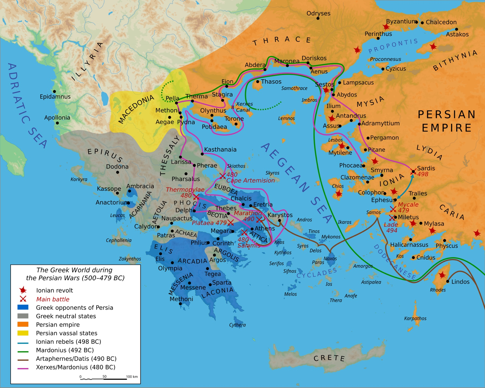
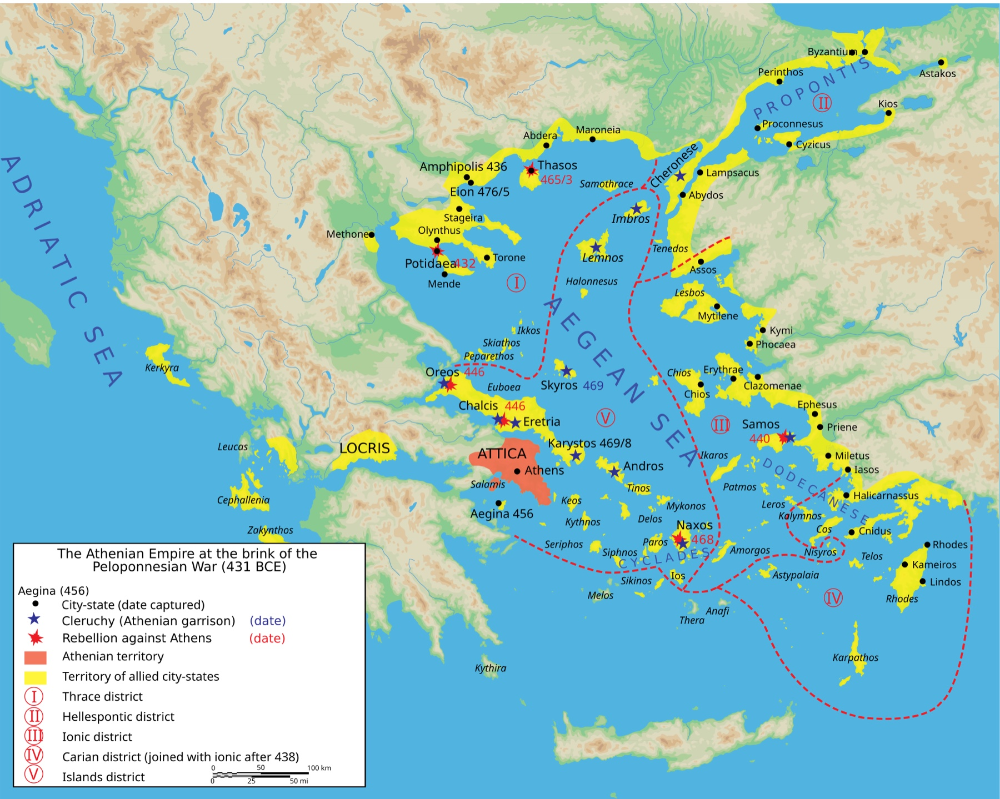
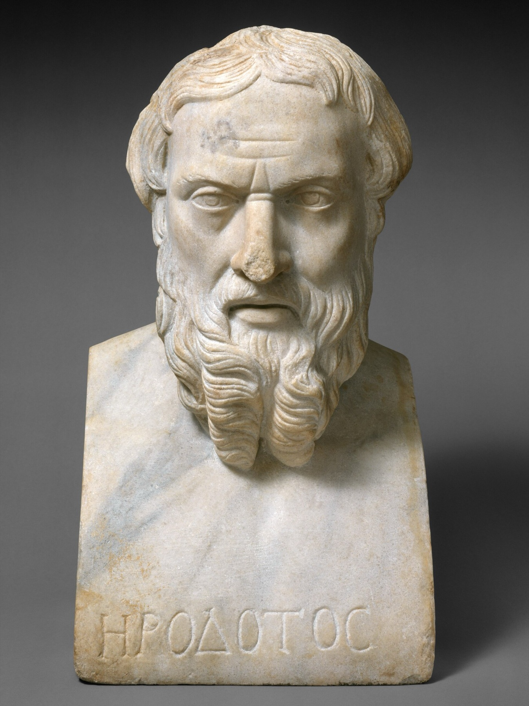
Herodotus 01 · The first sentence says everything
“What Herodotus the Halicarnassian has learnt by inquiry is here set forth: in order that the memory of the past may not be blotted out… and that great and marvellous deeds… may not lack renown.” Herodotus, Histories 1.1
The Greek word Popkin flags is istoria, which “can be translated as ‘inquiry’” (p. 28). The entire discipline is named after a procedure, not a subject — not revelation, not prophecy, not inherited tradition. He went and asked, and “devoted a good part of his writing to recounting the extensive travels… he had undertaken to collect information” (p. 28).
Memory, renown — and, Popkin’s fuller version adds, “the reason why they went to war against one another” (p. 29), almost as an afterthought. A very different job description than students expect from the word “history.”
The method is inquiry; the purpose is commemoration. Those two do not automatically agree.
Herodotus 02 · He shows you the disagreement
“For my own part, I will not say that this or that story is true… but I will name him whom I myself know to have done unprovoked wrong.” Herodotus, Histories 1.5
He opens with competing Persian, Greek, and Phoenician accounts of how East and West fell out — a chain of abducted women (Io, Europa, Medea, Helen) that reads more like mythology than causation. Then he declines to referee them. Not laziness but a choice: he leaves the seam visible.
Reporting that your sources conflict is a method. The Roman author Livy does the same on Thursday.
Herodotus 03 · History or parable?
Croesus, king of Lydia and proverbially rich, asks the Athenian sage Solon who the happiest man alive is, and is annoyed not to be the answer. He later asks Delphi whether to attack Persia, is told he will destroy a great empire — attacks, and destroys his own.
“Count no man happy until he is dead.” the sense of Solon’s reply, Histories 1.32 — which Croesus remembers on the pyre at 1.86
Look at the shape: a warning ignored, an ambiguous prophecy, pride, reversal, recognition at the last possible moment. Real events almost never arrive with that shape already on them. The point isn’t that Herodotus is lying — it’s that the episode does moral work whether or not it happened this way, and the moral work lives in the form, not the facts. Popkin, dryly: Herodotus is also called “the father of lies” for exactly this (pp. 30–31).
You will see it twice more this week: Lucretia in Livy, and Xiang Yu in Sima Qian. Same machine, different empires.
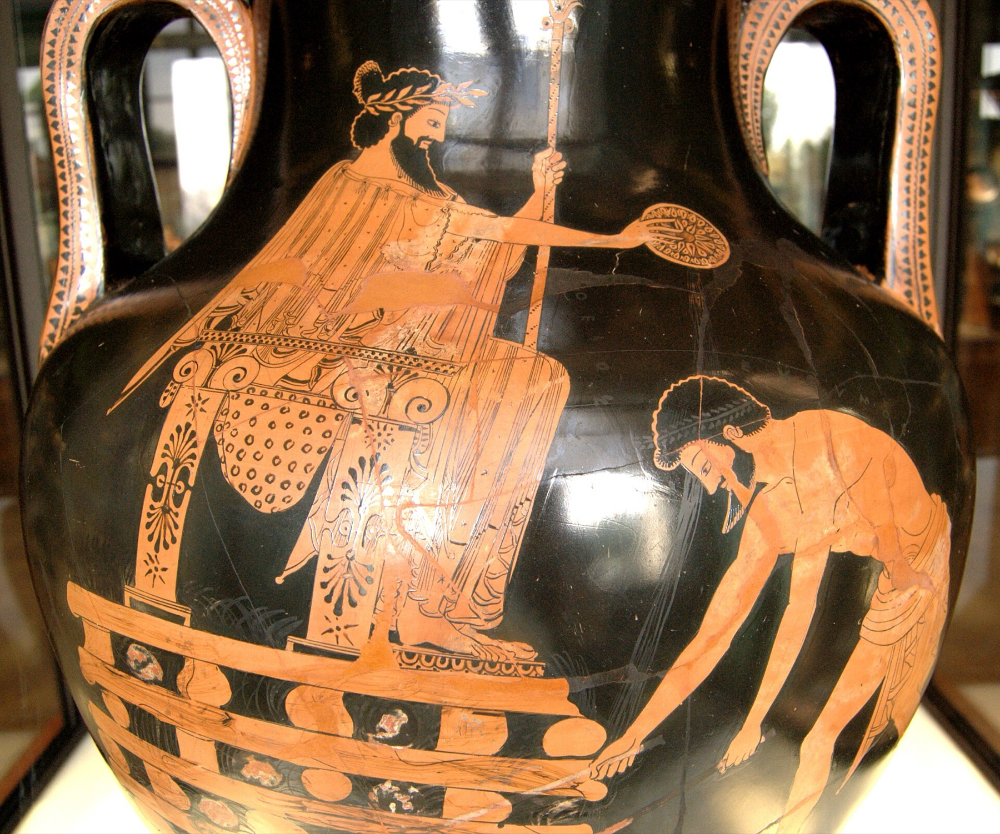
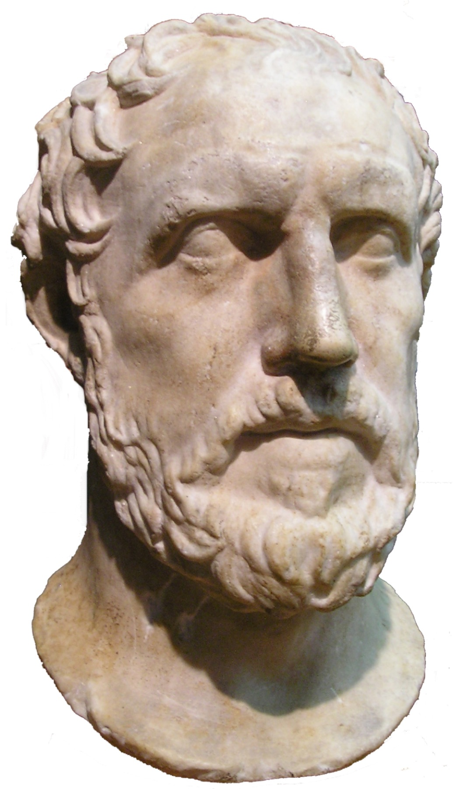
Thucydides 01 · The whole ballgame
“My method has been, while keeping as closely as possible to the general sense of the words that were actually used, to make the speakers say what, in my opinion, was called for by each situation.” Thucydides 1.22, quoted in Popkin, p. 30
In the same breath as his promise to include only what he personally observed or had from reliable witnesses (Popkin, p. 28), he tells you the speeches are partly his own composition — what the situation called for. Popkin does not soften this: such invented material “later became seen as blurring the line between history and fiction” (p. 30).
Popkin’s own analogy: “When makers of historical films create dialogue for their characters… they can be seen as reviving Thucydides’s practice” (p. 30). So — is the founder of rigorous history doing the thing we deduct points for, or is the biopic doing something legitimate?
He's honest about his intervention. Methodological rigor OR cheating?
Thucydides 02 · The Funeral Oration
“Its administration favours the many instead of the few; this is why it is called a democracy… In short, I say that as a city we are the school of Hellas.” Pericles, in Thucydides 2.37, 2.41
Pericles is not reporting a funeral. He is making an argument about what Athens is — open, democratic, cultured, worth dying for — while standing over the war dead in year one of a war Athens will lose. This is propaganda in the literal sense: a polis explaining itself to itself. And remember the previous slide: Thucydides wrote these words. In the speeches, Popkin notes, Thucydides “allowed his characters to explain the motives for their actions” (p. 30) — which is to say, they are where his interpretation lives.
Week 1 gave us three senses of “history”: the events, an account of the events, and the practice of producing accounts. This passage is all three simultaneously — a thing that happened, a speech about the Athenian past, and Thucydides deciding what that speech should have contained.
The most factual-looking history in antiquity contains a speech its author composed.
Thucydides 03 · The Melian Dialogue
Melos is a small neutral island. Athens demands submission; Melos argues for its neutrality and its rights. Thucydides then reports the outcome in one flat sentence: the Athenians killed the grown men and sold the women and children into slavery (5.116).
“Right, as the world goes, is only in question between equals in power, while the strong do what they can and the weak suffer what they must.” Thucydides 5.89
Thucydides narrates in his own voice constantly. So why is this a dialogue? Because the form lets him stage two incompatible logics — justice and power — colliding, without ever saying which he endorses. The apparent absence of judgment is itself an authorial decision.
Choosing a form is choosing an argument. “No comment” is a comment.
The move · Put them side by side
Here are four incompatible stories. I won’t tell you which is true. Here is what I find doubtful. You can see where his evidence runs out.
I include only what I saw or had from reliable witnesses — and I wrote the speeches myself, as each occasion demanded. You cannot see where his evidence runs out.
Almost everyone answers “Thucydides is more honest,” because he sounds more rigorous — Popkin notes his prose was “clear and precise, without rhetorical flourishes,” and “continues to serve as a model for serious history writing even today” (p. 30). But rigor-sounding prose is a rhetorical stance too. Herodotus flags his doubts and shows the seams; Thucydides smooths them and tells you once, in one chapter, that he has done so. Confidence is not transparency.
Popkin’s survey of modern textbooks makes the point sharper: Donald Kelley gives Herodotus nine pages and Thucydides two; others reverse it (p. 31). Which ancient historian a modern historian admires tells you what that modern historian thinks history is for.
Ask of any history: where would I be able to tell if this were wrong?
Guardrail · What we are not saying
“The Greek and Roman historians were not modern rationalists: they lived in a world that believed in various supernatural powers and took omens seriously.” Popkin, pp. 35–36
It is tempting to award points for how much they resemble us. Resist it. Firing the gods as causes is not the same as not believing in them — oracles are information here. And the reach was small: “whatever most of the population of the ancient world knew about history was largely transmitted through other means, such as public monuments and oral tradition. Written history was the preserve of a small, cultivated elite” (p. 36).
“Like us” is not a standard. It’s a bias with good manners.
Discussion · 2.1
Pick any contested recent event. Write one sentence about it the Herodotus way — competing accounts, named sources, moral shading — and one the Thucydides way — confident, causally tight, no visible seams. Then decide which one you would rather have been handed.
Part three · 2.2
Sima Qian finishes some sixty years before Livy begins, and neither has heard of the other. Livy at least inherits a Greek tradition; Sima Qian has no contact with one.
Part three · Who these two were
Titus Livius, born and died at Patavium (Padua), well away from Rome. No magistracy, no military command, no seat in the senate — nearly unique among major Roman historians, who were typically senators writing about offices they had themselves held. He worked from earlier writers, not from archives or eyewitness.
Inherited the office of taishi — court astrologer and record-keeper — from his father Sima Tan, at the court of Emperor Wu of Han. An official inside the state he was writing about, with access to court documents and the imperial collections.
Begun c. 29 BCE: 142 books from the founding to 9 BCE, of which 35 survive (1–10, 21–45); the rest is known only from ancient summaries. Written as Augustus consolidated power — though Tacitus reports that Augustus called him a Pompeianus for how warmly he wrote about the losing republican side.
130 chapters, some 526,000 characters, from the Yellow Emperor to his own day. In 99 BCE he defended the general Li Ling after a surrender to the Xiongnu and was condemned; unable to pay the fine that would commute the sentence, he accepted castration rather than execution in order to finish the book, and explained the choice in a letter to Ren An.
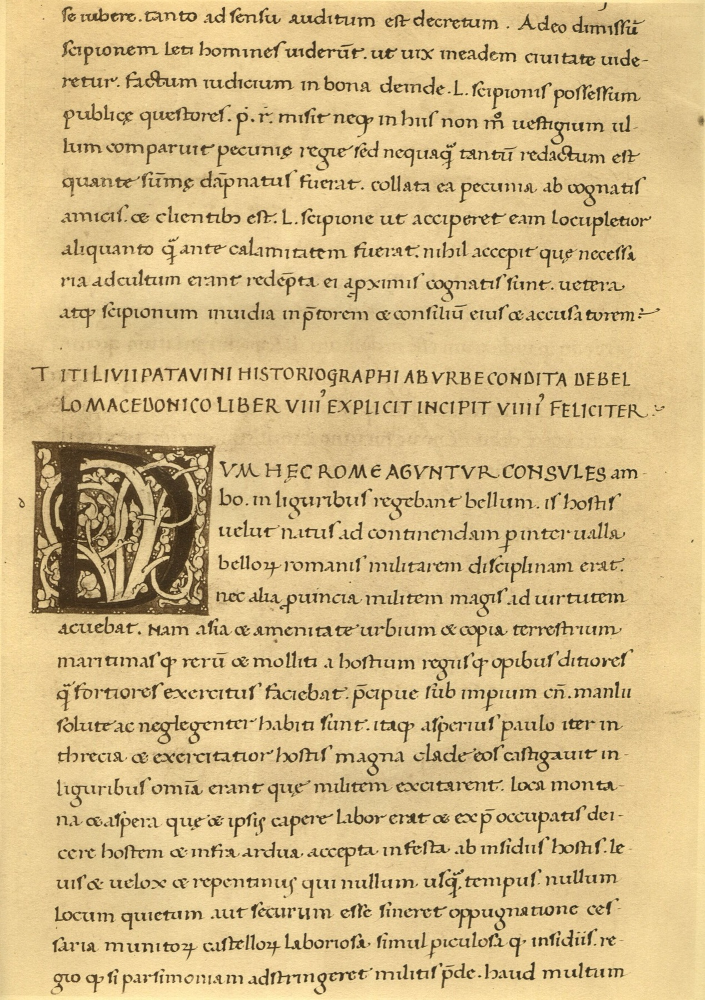
Livy 01 · The preface tells you the whole program
No command, no travels, no archive — he works from earlier writers, in a library, writing all of Rome from the founding (142 books, 35 survive) as a century of civil war ends and Augustus promises moral restoration.
“What chiefly makes the study of history wholesome and profitable is this, that you behold the lessons of every kind of experience set forth as on a conspicuous monument; from these you may choose for yourself and for your own state what to imitate, from these mark for avoidance what is shameful in the conception and shameful in the result.” Livy, Ab Urbe Condita, Preface (Foster trans.)
Herodotus: memory and renown. Thucydides: a reusable warning. Livy: a stock of exempla the reader is expected to draw on. Note the verbs — behold, choose, mark for avoidance. The interpretive work is assigned to the reader, and it is moral rather than analytical.
Traditions from before the founding, “adorned with poetic legends” rather than “trustworthy historical proofs,” he purposes “neither to affirm nor to refute.” Herodotus makes the same move at Histories 1.5, declining to adjudicate between rival origin stories.
The stated purpose is moral. The stated method suspends judgment on the legendary material — and is then not raised again across 142 books.
Livy 02 · The Rape of Lucretia
The king’s son rapes Lucretia; she makes her father and husband swear vengeance and kills herself in front of them; Brutus pulls out the knife, swears on the blood to drive out the Tarquins — and Rome ends the monarchy.
“Although I acquit myself of the sin, I do not free myself from the penalty; no unchaste woman shall henceforth live and plead Lucretia’s example.” Livy 1.58 (Roberts trans.)
A boast, a warning ignored, a violation, a speech, a suicide, a change of regime: the fall of a dynasty made to turn on a single household. The architecture is the one we met in Herodotus — Croesus on the pyre — now in Latin. And Lucretia’s final words are not grief but precedent: she is legislating for the women who come after her. Livy has her state the exemplum herself, leaving the reader nothing to infer.
Livy names no source for what was said in that room. The form carries the argument — and the argument is the founding charter of the Republic.
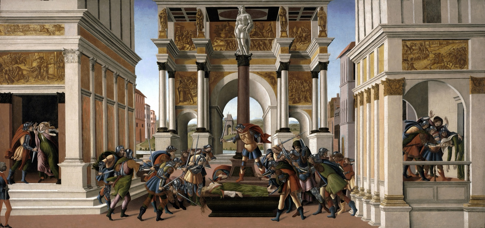
Livy 03 · Inherited form
A tyrant is asked how to hold a city. He answers without speaking — by decapitating the tallest plants in front of the messenger.
Periander of Corinth sends a herald to ask Thrasybulus of Miletus how to rule safely. Thrasybulus “took him into a field of corn, through which he began to walk… ever as he went breaking off and throwing away all such ears of corn as over-topped the rest… then, without a word, he sent the messenger back.”
Sextus Tarquinius sends a messenger to ask his father how to subdue Gabii. “The king went into the palace-garden, deep in thought, his son’s messenger following him. As he walked along in silence it is said that he struck off the tallest poppy-heads with his stick.”
It is not proof that Livy read Herodotus. Aristotle tells the same story with the roles reversed — Periander gives the advice, Thrasybulus receives it (Politics 3.1284a). The motif was therefore already in circulation in more than one version, and could have reached Livy through Roman annalists or the rhetorical schools. A shared story is evidence of a shared tradition, not of a book open on a desk.
Livy is not translating Greek sentences. He is working with inherited narrative shapes and refitting them: grain becomes poppies, a Corinthian tyrant becomes a Roman king, and the scene stays intact. It arrives pre-loaded with a claim about how tyranny operates — and Livy can deploy that claim without ever arguing for it. On Livy’s use of his Greek predecessors, see Craige Champion, “Livy and the Greek Historians from Herodotus to Dionysius,” in A Companion to Livy (2015).
Form travels between cultures more easily than evidence does — and a borrowed form arrives with its argument already inside it.
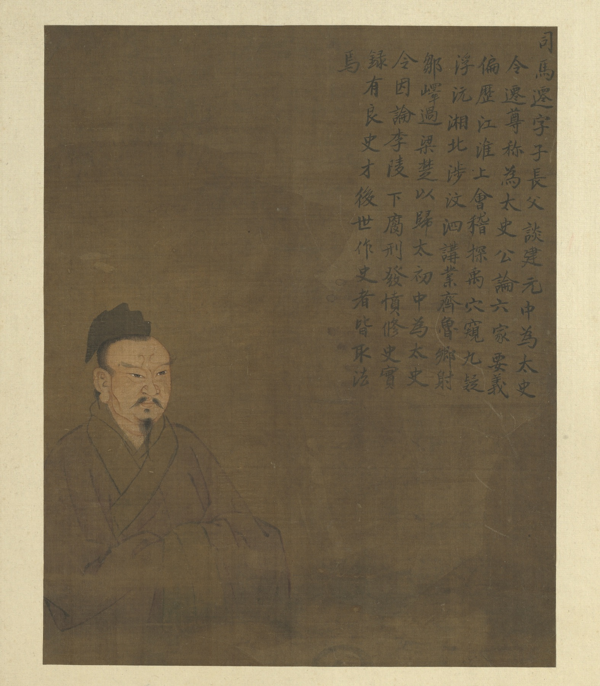
Sima Qian 01 · The Grand Historian
Court astrologer to Emperor Wu. Condemned for defending a general who surrendered, he accepts castration rather than execution in order to finish the book.
“I have cast a universal net to gather together all the old traditions of the world that were scattered and lost.” Sima Qian, quoted in Popkin, p. 37
The Shiji is not one narrative. It is five kinds of writing at once: annals of rulers, chronological tables, treatises on ritual and calendars and money, the hereditary houses, and seventy biographies. The past arrives sorted by type, not by story — nothing in Greece or Rome looks like this.
Xiang Yu never ruled a unified empire, and lost. Sima Qian files him in the basic annals — the section for legitimate sovereigns — just before the founder of the dynasty Sima Qian serves. A claim about who held the mandate, made silently, by a table of contents.
Form is argument again — but the form is now the organization of the book, not the shape of a scene.
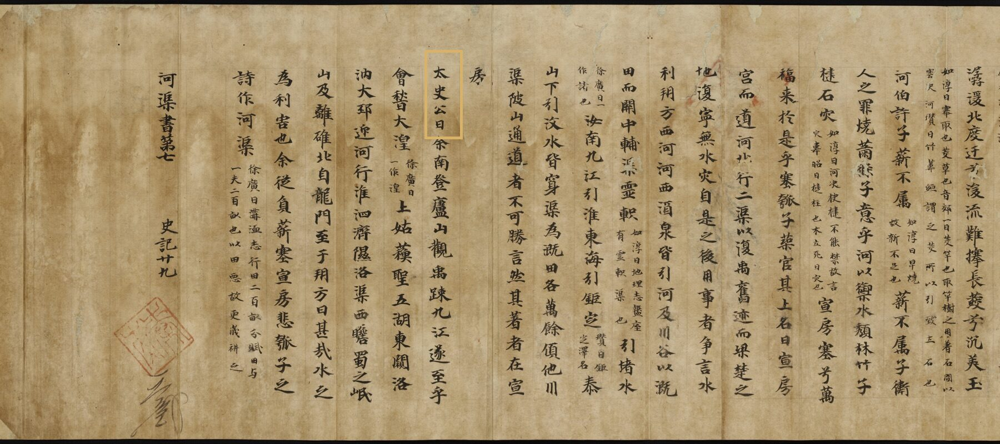
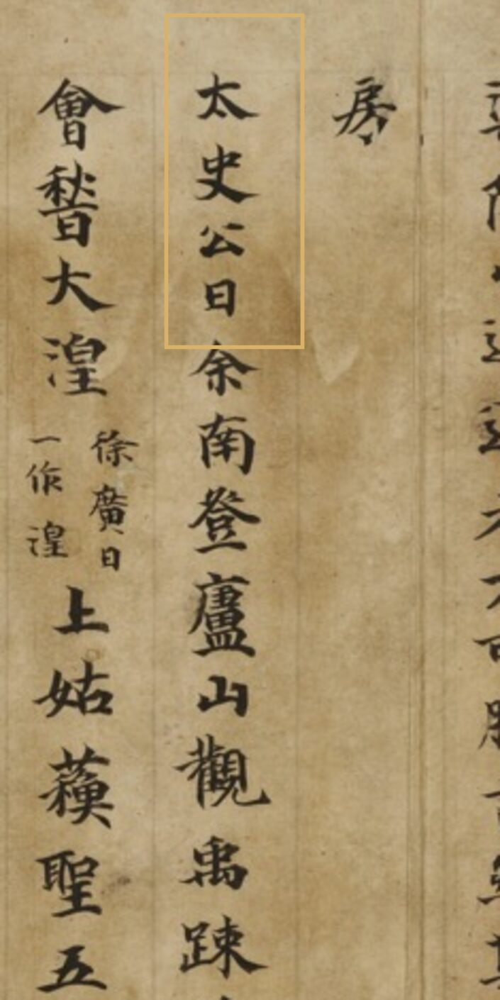
Sima Qian 02 · Xiang Yu at Gaixia
Surrounded and starving, Xiang Yu sings a farewell to his horse and his favorite, breaks out with twenty-eight riders, refuses the boat that would save him, spots an old acquaintance among the enemy cavalry, and kills himself.
“He was proud of his achievements, relied on his own intelligence without learning from the past… He quoted, ‘It is Heaven that has destroyed me, not my fault in warfare’ — was this not a great fallacy!” “The Grand Historian said…” — the closing verdict, Shiji 7
Xiang Yu insists Heaven destroyed him. Sima Qian closes the chapter in his own voice and says: no. He does this at the end of 106 of the 130 chapters — a signed verdict, fenced off from the narrative. Thucydides hides his judgment inside speeches he wrote; Sima Qian puts a box around his and initials it.
The song, the horse, the ferryman, the head — none of it verifiable, all of it making Xiang Yu magnificent. He gets the full tragic treatment and then the ruling. The sympathy is what makes the verdict cost something.
Herodotus won’t referee. Thucydides referees invisibly. Livy lets the story referee. Sima Qian referees in a labeled box at the end.
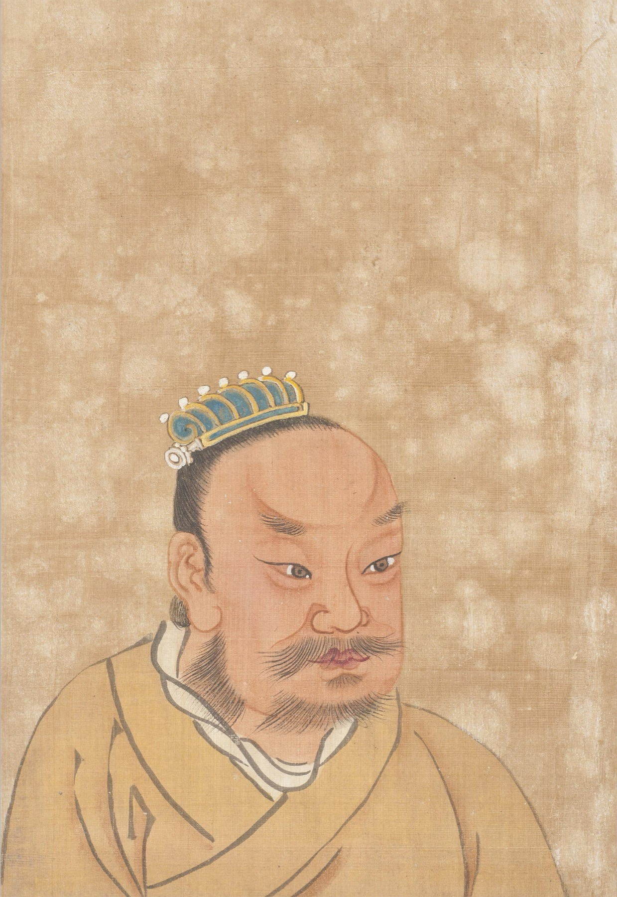
Discussion · 2.2
The lesson is inside the story; the reader picks it up. The author stays out of the frame.
The lesson is appended. Narrative first, then a named historian tells you where the man went wrong.
The rest of Popkin ch. 2 · threads we pick back up
The historian “describes the thing that has been”; the poet “a kind of thing that might be” — and so is more philosophic.
What’s beneficial is “the clear view of the causes of events, and the consequent power of choosing the better policy.” National history arrives with his successors, not with him.
“Let him bring a mind like a mirror, clear, gleaming-bright… free from distortion.” Long before Ranke.
Where Greeks and Romans explained events by human action, he “attributed them to divine providence.” The gods come back.
Recap · what to carry out of week 2
What was new wasn’t the subject. It was “critically examined evidence.”
The shared move that creates the historian’s job — without making them modern.
Memory and renown; a reusable warning; a monument of moral examples; a sorted and judged record.
A parable, an invented speech, a dialogue, a bedroom, a table of contents — each does work facts can’t.
Herodotus and Livy both refuse to referee the legends. Then both proceed with total confidence.
“Multiple perspectives from which the past can be viewed” — and unconnected cultures reaching for it independently.